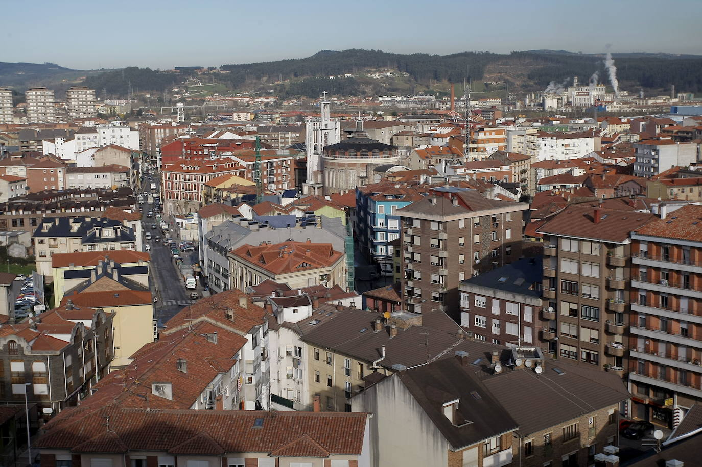

<table width="100%" height="100%" border="1" >
<tr>
<td colspan="2" background="imagenes/th.jpg">
  <h1>
    <center>
       <a href="cantabria4.html">
	  Torrelavega
	</a>
    </center>
  </h1>
  </td>
</tr>
<tr width="100%" height="80%">
  <td width="60%" height="80%" bgcolor="blue"  >
  
  La cuidad es de caracter industrial y comercial,siendo el segundo nucleo urbano mas relevante de la comunidad autonoma de Cantabria por detras de la capital autonomica Santander.
   
  </td>
  <td width="40%" height="80%" bgcolor="red">
  <h1>
    <center>
      Lugares de interes
    </center>
  </h1>
 
 
 <a href="cantabria5.html">
	   Via Verde
	</a>
	<br/>
	<a href="cantabria6.html">
	   La Lechera
	</a>
	
  </td>
</tr>
</table>